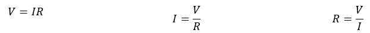
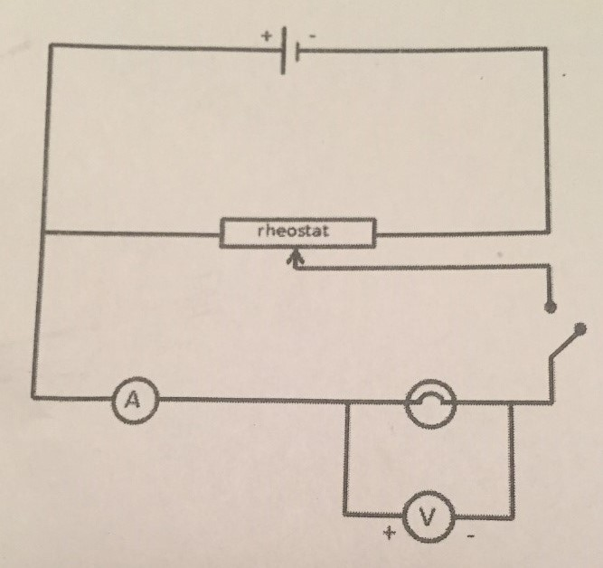
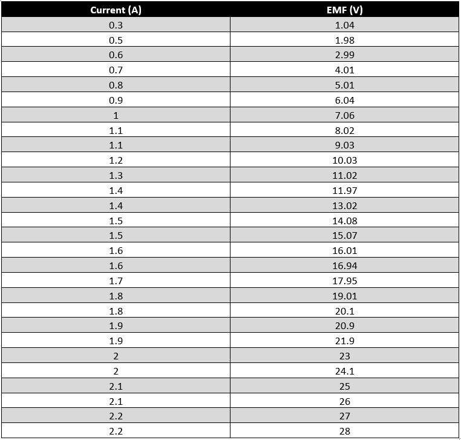
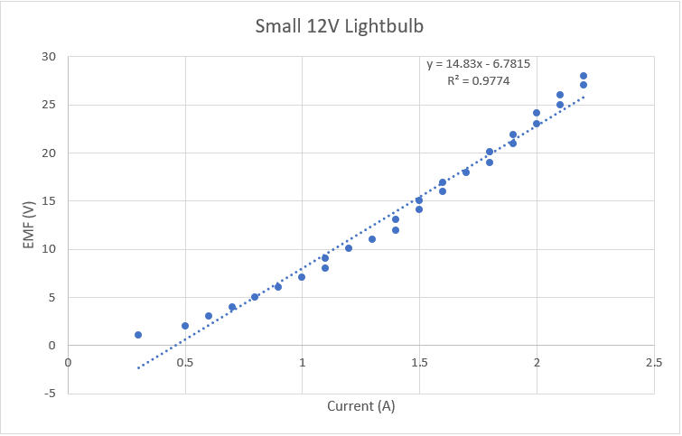
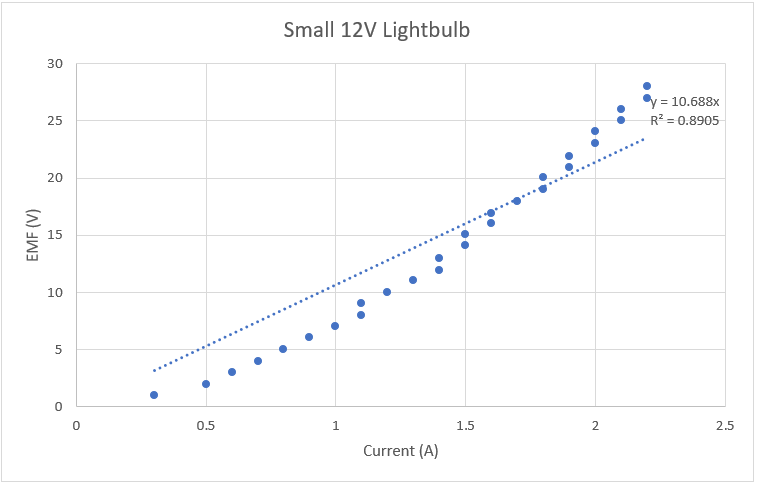
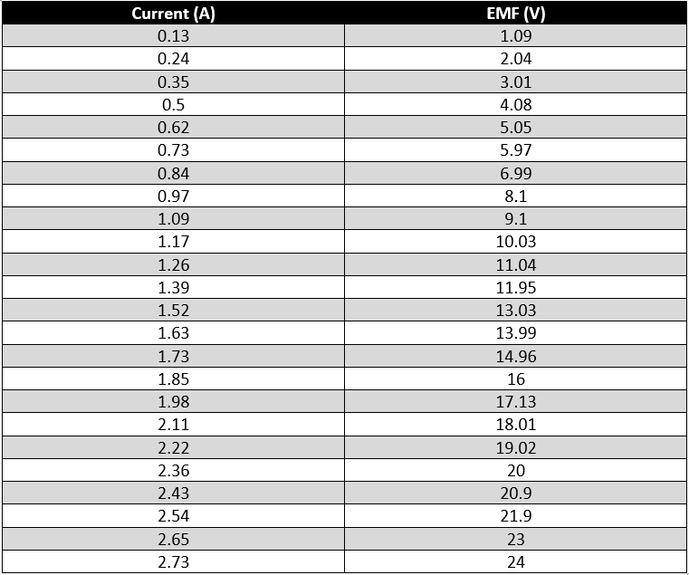
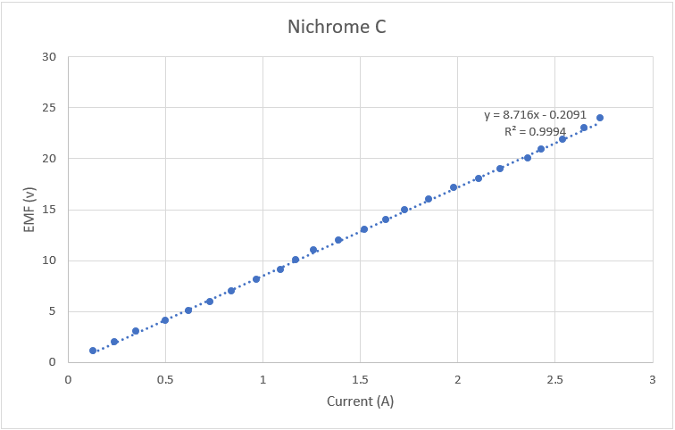
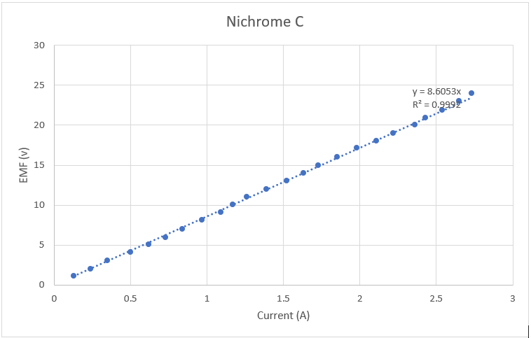

Stage 1 Physics | Practical Report | October 2018
When dealing with electricity and circuits, Ohm’s law is a very important concept to know and understand. The law was discovered and named after scientist George Ohm. It is a simple formula that describes the relationship between Voltage (V) measured in volts, Current (I) measured in Amps and Resistance (R) measured in Ohms:
This equation shows that the current is directly proportional to the voltage: I∝V. This means if the voltage is increased, the current will also increase. It also states that the current is inversely proportional to the resistance: I∝1/R. This means that if the resistance increases, the current will decrease, but if the resistance decreases, the current will increase. Finally, Ohm’s law states that the resistance of a conductor is constant. No matter how much the voltage or current is changed in a circuit, the resistance should always stay the same. In theory, all conductors of electricity should follow this law. However, not all do, and so conductors are usually split into two categories, ohmic and non-ohmic. Ohmic conductors follow Ohm’s law. When the relationship between the current and voltage of an ohmic conductor is showed on a scatter plot graph, the relationship is linear, or in a straight line. Non-Ohmic conductors however do neither of these, and the resistance does not stay constant when the current or voltage is changed.
This means that any conductor can be tested to find out if it is ohmic or non-ohmic. One just needs to graph the relationship between the current and voltage of the conductor. A rheostat or variable resistor can be used to more accurately control how much voltage is going through into the conductor, and both the Amps and Volts can be measured with a multi-meter.
The purpose of the practical is to determine whether the conductors used (12V lightbulb and Nichrome Wire) are ohmic or non-ohmic conductors by measuring and recording the mathematical relationship between Current and Voltage on a graph.
As the voltage is increased, the current too, will increase. When the mathematical relationship between the current and voltage is shown on a scatter plot graph, if the relationship is linear, then the conductor is ohmic. However, if it is not linear, and shows a curve, then the conductor is non-ohmic.
| Variable | Reason | |
|---|---|---|
| Independent | V - Voltage (Volts) | Voltage is an independent variable as it is the manipulation or change of the value of this variable that determines the value of the dependent variable. It will be changed by increasing the voltage on the battery pack and be efficiently controlled by using the rheostat/variable resistor. |
| R - Resistance of Circuit (Ohm's) | The resistance of the circuit is also an independent variable as it is also being manipulated to affect and better control the voltage. | |
| Dependant | I - Current (Amps) | I is a dependant variable because it is determined by the independent variable and is what is being measured. It will be measured using an ammeter. |
| Control | Set up of circuit | The way the circuit is set up must stay the same during the whole practical. If it is not kept constant, such as if the voltmeter was placed in series before the rheostat, then the results measured might not be accurate. |
| R – Resistance of Ohmic Conductor (Ohm’s) | Theoretically, the resistance of the conductor should stay the same according to Ohm’s law and cannot be changed. |
Figure 1.0 - Circuit Diagram
| Hazard | Risk | Mitigation | Action |
|---|---|---|---|
| Getting burnt by rheostat or lightbulb | Medium | Do not touch anything that isn’t an insulator (such as rheostat or lightbulb) as they can get very hot | Apply necessary first aid, if serious, call emergency services |
| Getting electric shock | Medium | Don’t touch non-insulated materials such as open alligator clips | |
| Breaking equipment from too much voltage | Low | Make sure voltage doesn’t exceed safety regulations |
Table 1.0: Small 12V Lightbulb
Graph 1.1: Small 12V Lightbulb (with y-intercept)
Graph 1.2: Small 12V Lightbulb (no y-intercept)
Table 2.0: Nichrome Wire C
Graph 2.1: Nichrome Wire C (with y-intercept)
Graph 2.2: Nichrome Wire C (no y-intercept)
Each of the results and graphs were able to demonstrate and prove the first part of the hypothesis – as the voltage was increased, the current too, increased. This proves that both the 12V battery and the nichrome wire followed part of Ohm’s law – I∝V. However, this does not prove that both are ohmic conductors. In Graph 1.1, the line of best fit had a fairly large gradient of approximately 14.83. The coefficient of determination was 0.9774, which implies that the results are very close to the line of best fit and were accurate. However, the graph also had a large y-intercept of -6.78. Theoretically, this graph should have no y-intercept, as if there is no voltage, then there cannot be any current. Having a y-intercept means that there is a systematic error. The y-intercept was set to 0 in graph 1.2, to more accurately show a line of best fit. This time, the dots of the scatter plot are much further away from the line of best fit, and the coefficient of determination is slightly smaller, indicating less accuracy. The plots on the graph also clearly do not show a linear relationship. Therefore, it can be concluded that 12V lightbulb is a non-ohmic conductor. This makes sense as when current flows through the metal filament in the bulb, its temperature increases dramatically. This excessive heat causes the resistance to increase along with the current which is not an ohmic quality.
The results shown in graph 2.1 and 2.2 were much more accurate. The y-intercept was miniscule and both coefficients of determination were 0.999. Furthermore, the mathematical relationship between the voltage and current is clearly linear. All this evidence suggests and proves that the nichrome wire is an ohmic conductor.
| Error | Effects on Results | How to fix | |
|---|---|---|---|
| Random Error | Fluctuating figures on multi-metre due to dodgy connections with middle school alligator clips | Hard to be certain what is correct figure, inaccurate results | Make sure all alligator clips are connected properly, use better wires/equipment |
| Using different equipment for each prac | Using different equipment may result in slightly different results each practical | Place all equipment used in prac into a box, so the same ones can be used again | |
| Systematic Error | Faulty multi-metre | When using a multi-metre that does not function correctly, all results recorded from it will be inaccurate. | Replace multi-metre with functioning one |
| Wrong setting on multi-metre | If multi-metre is put on wrong setting/sensitivity, then the results recorded will be inaccurate | Before recording results, double check that multi-metre is set to correct setting and sensitivity |
Both the 12V lightbulb and the nichrome wire showed part of Ohm’s law, which is that I∝V, because as the voltage increased, the current also increased. However, the mathematical relationship between current and voltage of the lightbulb was not linear, therefore the lightbulb is a non-ohmic conductor. The nichrome wire however, did show a linear relationship, and followed Ohm’s law exactly, and therefore is proven to be an ohmic conductor. Because of this, the purpose of the practical was completed and hypothesis was proven, making the experiment a success.